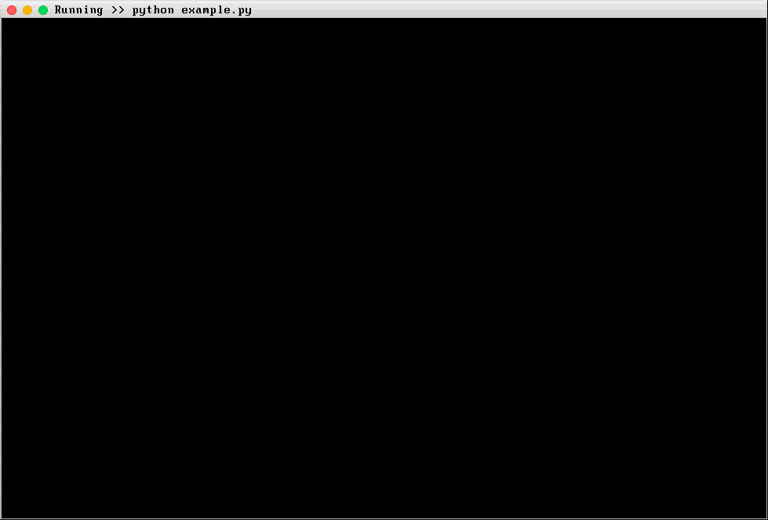
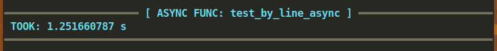

wraptimer
An amazing alternative to Python's builtin timeit module that allows for high resolution timing of functions as well as in-depth line-by-line timing. It also exposes convenient classes to measure execution time for any arbitrary code.

Sync function example
# imports
import time
from wraptimer import TimeIt
# Init
timeit = TimeIt ()
# decorate
@timeit . byline
def test_by_line ():
a = 10
b = 20
time . sleep ( 0.8 )
c = a + b
return [ a , b , c ]
# run
test_by_line ()
Async function example
# Imports
import asyncio
from wraptimer import TimeIt
# Init
timeit = TimeIt ()
# decorate
@timeit . byline
async def test_by_line_async ():
a = 10
b = 20
await asyncio . sleep ( 1.25 )
return [ a , b ]
# run
asyncio . run ( test_by_line_async ())
Don't need Line-by-line tracing?
Use @timeit.func if you do not want to print line-by-line durations.
...
@timeit . func
async def test_by_line_async ():
a = 10
b = 20
await asyncio . sleep ( 1.25 )
return [ a , b ]

Read the documentation
For more about wraptimer, Read The Documentation